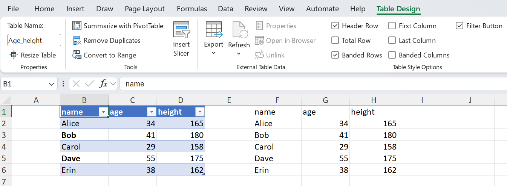
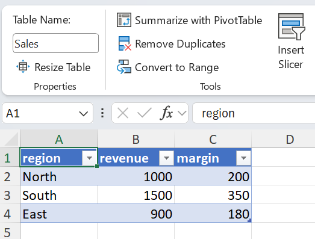
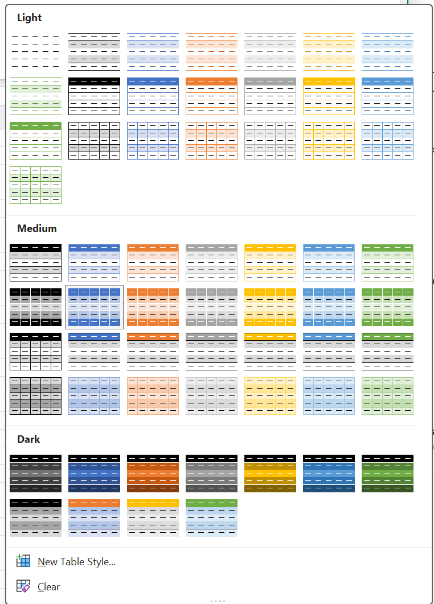
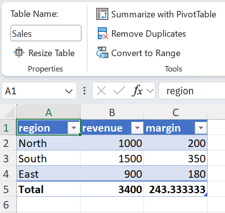
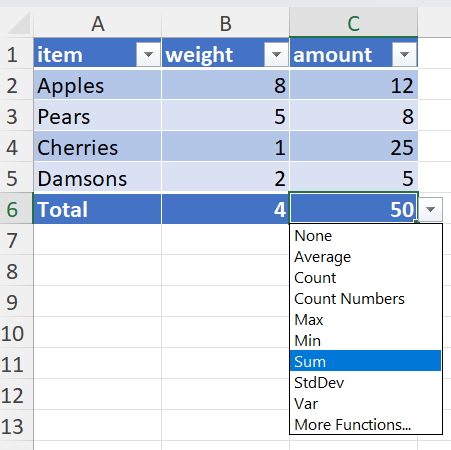
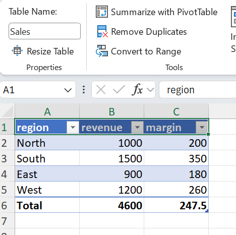
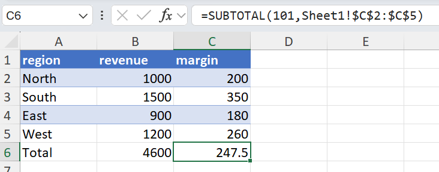

Excel Tables
What is an Excel Table?
XLSX.jl uses the word table in two distinct senses, and it is worth keeping them apart:
- Tabular data in a cell range. Functions like
XLSX.gettable,XLSX.readtable,XLSX.writetableandXLSX.eachtablerow(sheet, ...)have always worked this way: they treat any rectangular block of cells that looks like a table as one, working out its extent from the cell content. Nothing about such a range is recorded in the Excel file — it is simply cells, and the "table" exists only in the eye of the caller. (Shown below on the right.) - A native Excel Table. This is a real object in the workbook, created in Excel with Insert → Table (or
Ctrl+T) and represented in XLSX.jl by theXLSX.Tabletype. It has a name, a recorded extent, named columns, and optionally a style, an autofilter and a totals row. (Shown below on the left. The Table ribbon is shown when a Table is selected)

In this guide, a capitalised Table always means the native Excel object. Where a function name is ambiguous, the argument type resolves it: gettable(sheet) reads a range, gettable(t::Table) reads a Table.
An Excel Table always knows its own extent, gives each of its columns a name, and may carry a visual style, an autofilter and a totals row. Formulas elsewhere in the workbook can refer to it by name and by column (Sales[revenue]) rather than by cell address.
Because a Table's extent is recorded in the file itself, XLSX.jl never has to guess where the data begins and ends. This is the key difference from XLSX.gettable(sheet, ...), which infers a table's bounds heuristically from cell content and therefore needs options like first_row, stop_in_empty_row and keep_empty_rows to resolve the ambiguity. With an Excel Table there is no ambiguity to resolve: the header row, the data rows and the totals row are all defined.
XLSX.jl represents a Table with the XLSX.Table type, holding its name, ref (range), columns, whether it has a totals row, and its style.
Reading Tables
Finding the Tables on a worksheet
Use XLSX.tables to list every Table on a worksheet, and XLSX.table to fetch one by name or by its workbook-scoped numeric id:
julia> using XLSX
julia> f = XLSX.readxlsx("tables.xlsx")
XLSXFile("tables.xlsx") containing 2 Worksheets
sheetname size range
-------------------------------------------------
Sheet1 8x7 A1:G8
Sheet2 11x3 A1:C11
julia> s = f["Sheet1"]
8×7 XLSX.Worksheet: ["Sheet1"](A1:G8)
julia> XLSX.tables(s)
2-element Vector{XLSX.Table}:
7x3 Table (id=1, "IO_Table", A1:C8)
5x3 Table (id=2, "Age_height", E1:G6)
julia> t = XLSX.table(s, "Age_height")
XLSX.Table: "Age_height"
id : 2
range : E1:G6
columns : name, age, height
style : TableStyleMedium2 (row stripes)
totals : no
julia> XLSX.table(s, 2) # the same above, by id
XLSX.Table: "Age_height"
id : 2
range : E1:G6
columns : name, age, height
style : TableStyleMedium2 (row stripes)
totals : noXLSX.tables returns an empty vector for a worksheet with no Tables. XLSX.table throws a KeyError if the name or id is not found on that sheet.
Getting the data out
An XLSX.Table is itself a Tables.jl source, so it can be handed directly to any compatible sink. XLSX.jl also provides the same three accessors it provides for worksheets:
julia> using DataFrames
julia> DataFrame(t) # Tables.jl sink
5×3 DataFrame
Row │ name age height
│ String Int64 Int64
─────┼────────────────────────
1 │ Alice 34 165
2 │ Bob 41 180
3 │ Carol 29 158
4 │ Dave 55 175
5 │ Erin 38 162
julia> XLSX.gettable(t) # as an `XLSX.DataTable`
XLSX.DataTable(Any[["Alice", "Bob", "Carol", "Dave", "Erin"], [34, 41, 29, 55, 38], [165, 180, 158, 175, 162]], [:name, :age, :height], Dict(:name => 1, :age => 2, :height => 3))
julia> XLSX.getdata(t) # as a `Matrix`
5×3 Matrix{Any}:
"Alice" 34 165
"Bob" 41 180
"Carol" 29 158
"Dave" 55 175
"Erin" 38 162In every case, only the Table's own data rows are returned. The header row is used for column names and is excluded from the data, as is the totals row if the Table has one. Data elsewhere on the sheet — beside the Table, below it, or in another Table — are never included.
Iterating rows
XLSX.eachtablerow applied to a Table returns an iterator over its data rows:
julia> for r in XLSX.eachtablerow(t)
name = r[:name]
height = r[3]
println("$name is $(height)cm")
end
Alice is 165cm
Bob is 180cm
Carol is 158cm
Dave is 175cm
Erin is 162cmXLSX.eachtablerow(sheet, ...) infers a table's bounds from cell content and accepts options such as first_row, header, stop_in_empty_row, stop_in_row_function and keep_empty_rows to control that inference. XLSX.eachtablerow(t::Table) takes none of these options: a Table's ref is authoritative. In particular, a completely blank row within a Table's range is still part of the Table and is returned like any other row — it is never treated as the end of the data.
Row positions
There is deliberately no row_number method for a Table's rows, because two different things could reasonably be meant by it: a row's position within the Table, or its row number on the worksheet. The two existing precedents point different ways — XLSX.row_number applied to a TableRow (from XLSX.eachtablerow(sheet, ...)) is table-relative, whereas for a Table starting partway down a sheet the worksheet row is often what you actually need. Rather than pick one silently, both are available directly: enumerate for the position within the Table, and each row's row_number field for its worksheet row.
julia> t = XLSX.table(s, "Age_height") # a Table occupying E1:G6
julia> for (i, r) in enumerate(XLSX.eachtablerow(t))
println("table row $i is worksheet row $(r.row_number): ", r[:name])
end
table row 1 is worksheet row 2: Alice
table row 2 is worksheet row 3: Bob
table row 3 is worksheet row 4: Carol
table row 4 is worksheet row 5: Dave
table row 5 is worksheet row 6: Erinenumerate gives the position within the Table's data rows, counting from 1; the row_number field of each row gives its actual worksheet row, which is what you need if you want to go on and read or write those cells directly:
julia> for r in XLSX.eachtablerow(t)
if r[:age] > 40
XLSX.setFont(s, XLSX.CellRef(r.row_number, 5); bold=true)
end
endReading straight from a file
Both XLSX.readtable and XLSX.readto accept a table_name keyword to read a Table without opening the file first:
julia> df1 = XLSX.readto("tables.xlsx", "Sheet1", DataFrame; table_name="Age_height")
julia> df2 = XLSX.readto("tables.xlsx", DataFrame; table_name="Age_height")
julia> dt = XLSX.readtable("tables.xlsx", "Sheet1"; table_name="Age_height")Supplying the sheet name is faster on a workbook with many sheets: only that one worksheet is decompressed, exactly as for a normal single-sheet read. Omitting it searches every worksheet for the named Table — Table names are unique across a workbook, so this is unambiguous — but each sheet's Table metadata must be scanned until the Table is found. Cell data for the non-matching sheets are still never read.
table_name cannot be combined with a columns range, since a Table's own range is authoritative; doing so throws an XLSXError.
Creating Tables
From data already in the sheet
XLSX.addtable! turns an existing range of cells into a Table. The first row of the range is read as the header row, so those cells must already hold the column names:
julia> f = XLSX.newxlsx()
XLSXFile("blank.xlsx") containing 1 Worksheet
sheetname size range
-------------------------------------------------
Sheet1 1x1 A1:A1
julia> s = f[1]
1×1 XLSX.Worksheet: ["Sheet1"](A1:A1)
julia> s["A1"] = "region"; s["B1"] = "revenue"; s["C1"] = "margin";
julia> s["A2"] = "North"; s["B2"] = 1000; s["C2"] = 200;
julia> s["A3"] = "South"; s["B3"] = 1500; s["C3"] = 350;
julia> s["A4"] = "East"; s["B4"] = 900; s["C4"] = 180;
julia> XLSX.addtable!(s, "A1:C4"; name="Sales", style="TableStyleMedium2")
XLSX.Table: "Sales"
id : 1
range : A1:C4
columns : region, revenue, margin
style : TableStyleMedium2 (row stripes)
totals : no
julia> writexlsx("NowATable.xlsx", f, overwrite=true)
addtable! only wraps existing cells: it writes no header, data or totals values of its own. If name is omitted, a unique name is generated ("Table1", "Table2", …).
Table names are workbook-scoped and share a namespace with defined names, so addtable! rejects a name already used by another Table or by a defined name anywhere in the workbook. Names must also be valid Excel Table names — no spaces, and beginning with a letter or underscore.
ref must span at least two rows: a header row plus at least one data row. Excel does not support header-only Tables.
style should be one of Excel's built-in Table style names, matching the Table Styles gallery in Excel's Table Design ribbon:
| Family | Names |
|---|---|
| Light | "TableStyleLight1" … "TableStyleLight21" |
| Medium | "TableStyleMedium1" … "TableStyleMedium28" |
| Dark | "TableStyleDark1" … "TableStyleDark11" |
| None | "None" |

The first light style shown above corresponds to None - there are only 21 light styles. style is not validated against this list, because a workbook may also define custom Table styles of its own; any string is passed through as the style name. An unrecognized name that isn't a custom style defined elsewhere in the workbook will simply make Excel fall back to its default Table appearance.
While writing tabular data
XLSX.writetable! and XLSX.writetable accept as_table=true to turn the range they have just written into a Table, so there is no need for a separate XLSX.addtable! call:
julia> using DataFrames
julia> df = DataFrame(region=["North", "South", "East"], revenue=[1000, 1500, 900])
julia> XLSX.writetable("sales.xlsx", df; as_table=true, table_name="Sales", table_style="TableStyleMedium2")as_table=true cannot be combined with write_columnnames=false, since a Table needs a header row, and requires at least one data row.
The totals keyword sets a totals row in the same call, taking the same "ColumnName" => value pairs as XLSX.settotals!:
julia> using DataFrames
julia> df = DataFrame(region=["North", "South", "East"],
revenue=[1000, 1500, 900],
margin=[200, 350, 180])
julia> XLSX.writetable("sales.xlsx", df;
as_table=true,
table_name="Sales",
table_style="TableStyleMedium2",
totals=["region" => "Total", "revenue" => :sum, "margin" => :average],
)This writes the data, wraps it as a Table named Sales, and adds a totals row below it in one step — equivalent to calling XLSX.writetable with as_table=true and then XLSX.settotals! separately. totals requires as_table=true.

Custom formulas work here too, subject to the same aggregation requirement described under Totals rows:
julia> XLSX.writetable("sales.xlsx", df;
as_table=true,
table_name="Sales",
totals=["revenue" => :sum,
"margin" => (:custom, "SUBTOTAL(109,Sales[revenue])-SUBTOTAL(109,Sales[margin])")],
)For the multi-sheet forms of XLSX.writetable, as_table and table_style apply uniformly to every sheet. Each Table's name is taken from its sheet's name, normalized into a valid Table name if necessary (so a sheet named "Q1 Report" gives a Table named Q1_Report); if the normalized name would collide with an existing Table or defined name, an auto-generated name is used instead and a warning is issued.
In contrast, totals is only supported on the single-sheet forms. For multiple sheets, build the workbook first with XLSX.openxlsx and apply XLSX.writetable! per sheet, each with its own totals:
julia> XLSX.openxlsx("report.xlsx", mode="w") do xf
s1 = xf[1]
XLSX.renamesheet!(s1, "REPORT_A")
XLSX.writetable!(s1, df1; as_table=true, table_name="Report_A",
totals=["revenue" => :sum])
s2 = XLSX.addsheet!(xf, "REPORT_B")
XLSX.writetable!(s2, df2; as_table=true, table_name="Report_B",
totals=["amount" => :sum])
endThe same keywords are available on XLSX.writetable! when writing into an existing worksheet.
Totals rows
Adding a totals row
XLSX.settotals! adds or updates a Table's totals row. Each setting is a "ColumnName" => value pair:
julia> XLSX.settotals!(s, "Sales", "region" => "Total", "revenue" => :sum, "margin" => :average)
XLSX.Table: "Sales"
id : 1
range : A1:C5
columns : region, revenue, margin
style : TableStyleMedium2 (row stripes)
totals : yesIf the Table did not already have a totals row, one is added by extending the Table by one row — the row immediately below its current last row, which must be empty.
There are three kinds of setting:
A Symbol names a built-in totals function. XLSX.jl writes both the totalsRowFunction metadata and the corresponding SUBTOTAL formula into the cell; Excel does the arithmetic.
| Symbol | Excel function | Notes |
|---|---|---|
:sum | SUM | |
:average | AVERAGE | |
:countnum | COUNT | numeric cells only |
:count | COUNTA | any non-blank cell, including text |
:max | MAX | |
:min | MIN | |
:stddev | STDEV | sample standard deviation |
:var | VAR | sample variance |
:none | — | clears the column's totals setting, leaving its totals cell blank |
A String is written as a plain text label — conventionally in the leftmost column, as "Total" above.
A (:custom, formula) tuple covers Excel's More Functions… option, for a totals row cell that isn't one of the built-ins.

julia> XLSX.settotals!(s, "Sales", "margin" => (:custom, "SUBTOTAL(109,Sales[revenue])-SUBTOTAL(109,Sales[margin])"))A bare column reference such as Sales[revenue] in a totals row cell is rewritten by Excel into a "this row" implicit intersection ([@revenue]), which has no valid row to intersect against and produces #VALUE!. Wrap each column reference in an aggregate — SUBTOTAL(109, Sales[revenue]) or SUM(Sales[revenue]) — as in the example above. XLSX.jl does not validate or evaluate the formula.
Reading values from a Totals row
A Totals row is separate from the Table's data. It is not included in the Tables.jl access provided for the Table itself. Instead, the function XLSX.gettotals is provided, which returns a named tuple of (column_name = values) where values is itself a named tuple giving the setting, formula and value of the total for that column.
The setting is a Symbol naming a built-in function (:sum, :average, …), :custom for a custom formula, :label for a literal text label, or :none if the column has no totals setting. The formula returns the actual Totals formula (as shown in Excel's formula bar) and value gives the cell's value. Thus:
julia> tot = XLSX.gettotals(t)
(region = (setting = :label, formula = nothing, value = "Total"), revenue = (setting = :sum, formula = "=SUBTOTAL(109,Sales[revenue])", value = 3400), margin = (setting = :average, formula = "=SUBTOTAL(101,Sales[margin])", value = 243.33))
julia> tot.revenue.setting
:sum
julia> tot.revenue.value
3400When a Table is read from Excel, XLSX.gettotals will return the cell's value for each column in the table.
In contrast, when a Totals formula in a Table is defined in XLSX.jl, either for a new Table or overwriting a formula in an existing Table, its cell value is not (cannot be) calculated by XLSX.jl; its value will be returned as missing. It will be properly calculated when the file is first opened by Excel.
Updating a totals row
Columns not mentioned in a XLSX.settotals! call are left alone, so an existing totals row can be adjusted one column at a time:
julia> XLSX.settotals!(s, "Sales", "revenue" => :max) # margin's average is untouchedSetting a column that already has totals content cleanly replaces it, whether it was a function, a custom formula or a label. To remove a column's totals, pass :none explicitly:
julia> XLSX.settotals!(s, "Sales", "margin" => :none) # margin's totals cell clearedThe totals row itself remains, even if every column's totals is cleared — an empty totals row is valid, and Excel displays it. Use XLSX.removetotals! to remove the row entirely.
As with every formula written by XLSX.jl, no cached value is stored alongside a totals formula. XLSX.setFormula replaces the cell with a value-less formula cell, so the cell reads back as missing, and Excel computes the result when the file is opened (XLSX.jl sets fullCalcOnLoad to force recalculation).
Modifying Tables
Appending rows
XLSX.appendtable! adds rows to an existing Table and extends its range to include them:
julia> XLSX.appendtable!(s, "Sales", [("West", 1200, 260), ("North East", 800, 150)])
XLSX.Table: "Sales"
id : 1
range : A1:C7
columns : region, revenue, margin
style : TableStyleMedium2 (row stripes)
totals : yesIf the Table has a totals row, it moves down so that it remains the last row, and its content is regenerated from the Table's own per-column settings — functions, custom formulas and labels are all preserved, but values are removed to be recalculated by Excel.
The rows immediately below the Table that will be filled by XLSX.appendtable! must be empty; otherwise an XLSXError is thrown. Pass check_empty=false to overwrite whatever is there.
data may be any Tables.jl source (a DataFrame, an XLSX.DataTable, etc), an AbstractMatrix, or a vector of row vectors or tuples. Sources that expose column names are matched by name and reordered into the Table's column order; a source missing any of the Table's columns, or carrying a column the Table does not have, is an error. Sources without column names are matched positionally, so their column order must match the Table's:
julia> df = DataFrame(margin=[260], revenue=[1200], region=["West"]) # scrambled order
julia> XLSX.appendtable!(s, "Sales", df) # matched by name, not position
Deleting a Table
XLSX.deletetable! removes a Table by name or by id:
julia> XLSX.deletetable!(s, "Sales")This removes the Table object only — its definition, its style, its autofilter and its totals metadata. The underlying cells are left completely untouched: the header row, the data rows and any totals row all keep the values they held before the Table was deleted.
This mirrors Excel's own Table Design → Convert to Range. There is no single Excel operation that deletes a Table and its data together, and XLSX.deletetable! follows the same convention. If you want the data gone as well, clear the cells yourself as a separate step:
julia> t = XLSX.table(s, "Sales")
julia> XLSX.deletetable!(s, "Sales")
julia> writexlsx("Sales3.xlsx", f, overwrite=true)
julia> s[t.ref] = "" # optional: clear the data too
julia> s[:]
6×3 Matrix{Any}:
missing missing missing
missing missing missing
missing missing missing
missing missing missing
missing missing missing
missing missing missingPreserving Tables in existing files
Tables in a workbook opened for editing are preserved through a read-write cycle, whether or not they are touched:
julia> f = XLSX.opentemplate("tables.xlsx")
julia> f["Sheet1"]["Z100"] = "an unrelated edit"
julia> XLSX.writexlsx("tables_edited.xlsx", f; overwrite=true)Every Table's definition, style, autofilter and totals metadata survives unchanged, as do Tables on sheets that were never accessed.
What is not supported
The following aspects of Excel Tables are not currently implemented. Files containing them can still be read, written and round-tripped — the relevant parts are simply preserved as they are, rather than being interpreted:
- Structured reference parsing. Formulas that use structured references (
=[@Qty]*[@Price]) are preserved verbatim but not parsed or rewritten. - Calculated columns. A Table's
calculatedColumnFormuladefinitions are preserved but cannot be created or edited through XLSX.jl. - Resizing and restructuring. Beyond
XLSX.appendtable!, a Table's range cannot be shrunk, and columns cannot be added or removed. - Custom Table styles. Built-in style names can be applied, and a workbook's existing custom styles are preserved, but new custom Table styles cannot be defined.
- Slicers and pivot tables. Not supported.
An XLSXFile must be opened in write mode for any of the Table modification functions to work, otherwise an error is thrown.